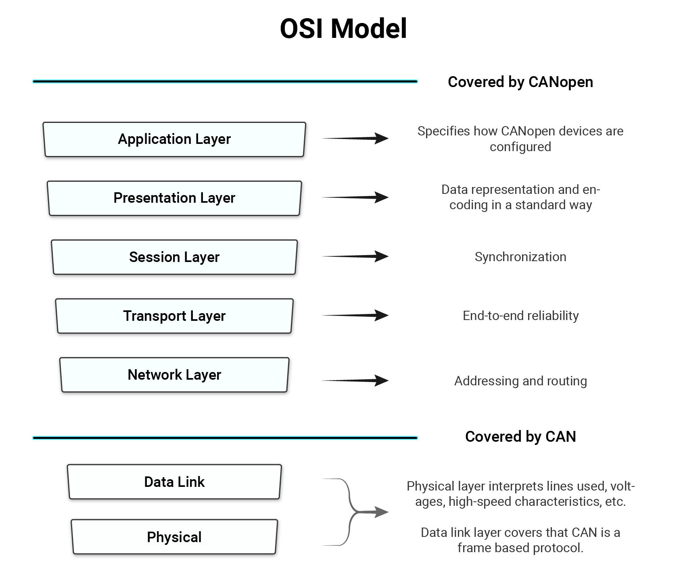
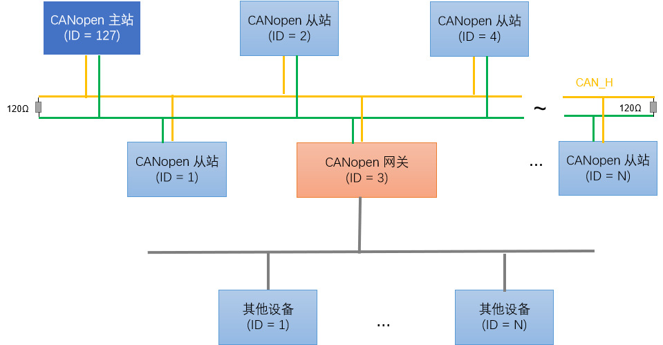
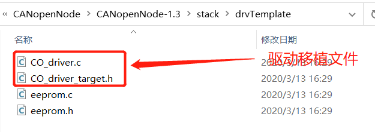
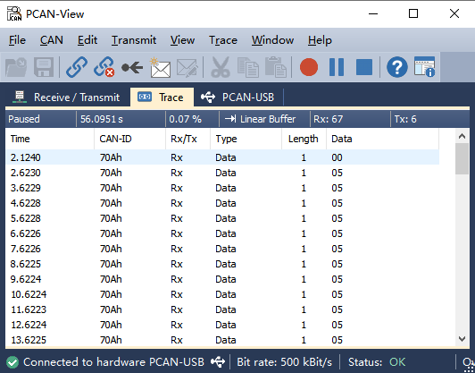

CANopenNode移植----基于MM32G5330
引言
基本的CAN总线外设驱动程序能够提供基本的操作硬件电路系统的服务，但在具体的应用系统中，更多是基于协议栈开发上层应用，而不是针对某个具体的芯片平台编写定制的应用程序。目前CANopen是工业自动化领域最常用的协议栈标准之一。对应地，有一些实现CANopen协议的开源软件包，例如CANopenNode、CAN Festival等。
CANopen概述
CANopen 的诞生和作用
CANopen 协议是在20世纪90年代末，由总部位于德国纽伦堡的CiA(CAN-in-Automation) 组织在CAL(CAN Application Layer)的基础上发展而来。由于CANopen协议的创始人团队也是CAN-bus的创始人团队，此协议充分发挥了CAN-bus所具备的所有优势，特别是 CiA 组织的主席蔡豪格(Holger Zeltwanger)先生对于CANopen协议坚持开放、免费、非盈利的原则。一经推出便在欧洲得到了广泛的认可与应用。虽然CiA组织背后没有强大的财阀支撑，但时至今日已经成为全世界最为流行的CAN应用层协议。
CANopen主要提供了两个服务：第一个是提供了一个基于CAN的通信协议，可以将多个设备连接到一个总线；第二个是提供了一个用于设备管理的标准，可以将多个设备组织成一个系统，以实现远程监控和控制。目前，CANopen作为工业自动化领域最常用的标准之一，被广泛应用于汽车、航空航天、楼宇自动化等行业。
如图x所示，CNAopen是一个基于CAN总线的上层协议，其中CAN涵盖了OSI模型的前两层：物理层和数据链路层，CANopen涵盖了后五层：网络层（寻址、路由）、传输层（端到端可靠性）、会话层（同步）、表现层（以标准方式编码的数据、数据表现）和应用层。应用层规定了CANopen设备是如何配置、传输和同步。

CANopen从应用端到CAN总线的结构如下图x所示：
- 应用层(Application)
- 用于实现各种应用对象
- 对象字典(Object dictionary)
- 用于描述CANopen节点设备的参数
- 通信接口(Communication interface)
- 定义了CANopen协议通信规则以及CAN控制器驱动之间对应关系
在CANopen网络中，通常需要多个设备进行通信，在CANopen网络中用到了如下三种通信模型：

- 主机/从机模型(Master/Salve)
- 一个节点(例如控制接口)充当应用程序主机控制器，从机(例如伺服电机)发送/请求数据，一般在诊断或状态管理中使用。
- 通信样例：NMT主机与NMT从机的通信
- 所有节点通信地位平等，运行时允许自行发送报文，但CANopen网络为了稳定可靠可控，都需要设置一个网络管理主机 NMT-Master。
- NMT主机一般是CANopen网络中具备监控的PLC或者PC(当然也可以是一般的功能节点)，所以也成为CANopen主站。相对应的其他CANopen节点就是NMT从机(NMT-slaves)。
- 客户端/服务端模型(Client/Server)
- 客户机向服务器发送数据请求，服务器进行响应。例如，当应用程序主机需要来自从机OD的数据时使用。
- 通信样例：SDO客户端与SDO服务端的通信
- 发送节点需要指定接收节点的地址(Node-ID)回应CAN报文来确认已经接收，如果超时没有确认，则发送节点将会重新发送原报文。
- 生产者/消费者模型(Producer/Consumer)
- 生产者节点向网络广播数据，而网络由使用者节点使用。生产者可以根据请求发送此数据，也可以不发送特定请求。
- 通信样例：心跳生产者与心跳消费者的通信
- 单向发送传输，无需接收节点回应CAN报文来确认。
CANopen的COB-ID
- 11位CAN ID在CANopen中被称为COB-ID，这11位COB-ID被分为两部分：前4位是功能码，后7位是(节点ID)，且7位的节点ID限制了CANopen网络上的设备数量为127个节点。
CANopen的7种报文类型
-
NMT(Network Management)
- 控制CANopen设备状态，用于网络管理。
-
SYNC(Synchronization)
- SYNC 消息用于同步多个 CANopen 设备的输入感应和驱动——通常由应用程序 Master 触发。
-
EMCY(Emergency)
- 在设备发生错误(例如传感器故障)时使用的，发送设备内部错误代码。
-
TIME
- 用于分配网络时间，议采用广播方式，无需节点应答，CAN-ID 为 100h，数据长度为 6，数据为当前时刻与1984年1月1日0时的时间差。节点将此时间存储在对象字典1012h的索引中。
-
PDO(Process Object)
- PDO服务用于在设备之间传输实时数据，例如测量数据(如位置数据)或命令数据(如扭矩请求)。
-
SDO(Sever D Object)
- 用于访问/更改CANopen设备的对象字典中的值——例如，当应用程序主机需要更改CANopen设备的某些配置时。
- Heartbeat
- Heartbeat服务有两个用途: 提供“活动”消息和确认NMT命令。
OD(Object Dictionary，对象字典)
-
什么是对象字典？
- 对象字典是一个标准的数据结构，描述了CANopen节点的不同的对象参数特性。
- 每个CANopen节点都包含一个对象字典，使用ESD文件来记录节点参数。
- Master节点可通过SDO(且只能通过SDO)来访问和配置Slave节点的对象字典。
-
对象字典中每个对象的构成
- Index (索引)：16位对象的基地址，其范围在0x0000到0xFFFF之间。
- Sub Index (子索引)：为了避免数据大量时无索引可分配，所以在某些索引下也定义了一个8位的索引值，其范围是0x00到0xFF 之间。
- Object name (对象名称): 如：制造商设备名称。
- Object type(目标类型): 变量、数组或记录。
- Data type (数据类型): 例如 字符串类型, UNSIGNED32类型UNSIGNED16类型。
- Access (访问权限)：rw (read/write), ro (read-only), wo (write-only)。
- Default Value(默认值):
- Category (类型)：指定此参数是否为强制/可选(M/O)。

图 x -
EDS(The Electronic Data Sheet)
- 在实际使用中，配置或管理复杂的 CANopen 网络将使用软件工具来完成，CiA 306标准定义了一个人类可读的且对机器友好的出厂文件格式即EDS格式文件，作为设备OD的“模板”。EDS文件通常由设备供应商提供，包含所有设备对象(但不包含参数值)的信息。简而言之，EDS是由CANopen设备厂商提供的不带参数的设备OD模板。
-
对象字典编辑器
- 对象字典编辑器是用于CANopen对象字典、设备信息等的GUI编辑器，可将 EDS 格式文件导入，通过编辑器编辑赋值后导出成 CANopen对象字典的C源代码文件。导出的在两个源代码文件CO_OD.c和CO_OD.h文件就是我们最终在软件开发时需要的对象字典源文件。
CANopen主站和从站
具有网络管理（Network Management：简称NMT）主机功能的设备通常被称为CANopen主站设备，通常也具有服务数据（Service Date Object：简称SDO）客户端功能。反之具有网络管理（NMT）从机功能的设备通常被称为CANopen从站设备，且其必须具备有服务数据服务器功能。这样CANopen主站设备就可以控制从站以及读写CANopen从站设备的对象字典。
- CANopen从站特性
- CANopen从站在CANopen网络中拥有唯一的节点地址，并且能独立完成特定的功能，例如数据采集、电机控制等等。对实时性要求高的数据，通常通过实时数据过程（Process Data Object：简称PDO）进行传输，因此CANopen从站应当支持一定数量的PDO传输功能。根据CANopen协议DS301 V4.02的定义，每个从站都预定义了4个TPDO（Transmit Process Data Object：简称TPDO）和4个RPDO（Receive Process Data Object），另外从站也应具有节点/寿命保护或心跳报文以及生产紧急报文等功能。每个CANopen从站都应有一个对象字典，描述了从站所具有的应用参数和通信参数。
- CANopen主站特性
- CANopen主站在网络所起的作用有别于CANopen从站，通常CANopen主站在网络中负责网络管理、从站参数配置以及从站数据的处理，其并不一定具有特定的功能，但也有自己的对象字典和唯一的节点地址，一般是CANopen网络中具备监控的PLC或者PC(当然也可以是一般的功能节点)。
CANopen网络组建
由于CANopen是基于CAN总线的一种应用层协议，因此其网络组建与CAN总线一致，典型的总线型结构，从站和主站都挂接在该总线上即可，在一个CANopen网络中只能有一个主站设备和若干个从站设备同时工作。CANopen网络布线时选用带屏蔽双绞线，提高总线抗干扰能力。表 x 所示为CAN通信比特率与总线长度的关系。
表 x
| Bit rate | Bus length |
|---|---|
| 1 Mbit/s | 25 m |
| 800 kbit/s | 50 m |
| 500 kbit/s | 100 m |
| 250 kbit/s | 250 m |
| 125 kbit/s | 500 m |
| 50 kbit/s | 1.000 m |
| 20 kbit/s | 2.500 m |
| 10 kbit/s | 5.000 m |
注意：
- 总线长度的估计是基于CANopen CiA 301 规范建议的采样点位置。
- 总线长度的估计是基于5 ns/m的传播延迟。此外，还需要考虑所用的CAN控制器、CAN收发器和光耦合器的延迟时间。
如图x所示为CANopen网络的基本结构，在该网络中有一个CANopen主站，负责管理网络中的所有从站，每个设备都有一个独立的节点地址（NodeID）。从站与从站之间也能建立通信，通常需要事先对各个从站进行配置，使各个从站之间能够建立起独立的PDO通信。
图x所示为带有网关设备的CANopen网络，与基本的CANopen网络相比，该网络中增加了一个CANopen网关设备，该网关设备可以是CANopen转DeviceNet、Profibus、Modbus或其它的设备。在CANopen网络中，我们也可把该网关设备作为一个从站设备或者是CANopen主站设备。

NMT网络管理
为实现CANopen网络稳定可靠高效运行，需要对CANopen网络进行网络管理，NMT主机通过下发命令，来控制NMT从机进行有序工作，故每个CANopen协议栈中都具有NMT网络管理的功能。
- CANopen节点设备运行时存在六种状态：
- 初始化
- 节点上电后对功能部件包括CAN控制器进行初始化。
- 应用层复位
- 节点中的应用程序复位（开始），比如开关量输出、模拟量输出的初始值。
- 会话层复位
- 节点中的CANopen通讯复位（开始），从这个时刻起，此节点就可以进行CANopen通讯了。
- 预操作状态
- 节点的CANopen通讯处于操作就绪状态，此时此节点不能进行PDO通信，而可以进行SDO进行参数配置和NMT网络管理的操作。
- 操作状态
- 节点收到NMT主机发来的启动命令后，CANopen通讯被激活，PDO通信启动后，按照对象字典里面规定的规则进行传输，同样SDO也可以对节点进行数据传输和参数修改。
- 停止状态
- 节点收到NMT主机发来的停止命令后，节点的PDO通信被停止，但SDO和NMT网络管理依然可以对节点进行操作。
- 初始化
如下图x所示，上述六种状态中除了初始化状态外，都可以通过NMT主机发送NMT命令让CANopen网络中任意一个节点进行其他5种状态的切换。

CANopenNode简介
CANopenNode是一款免费和开源的CANopen协议栈，使用用ANSI C语言以面向对象的方式编写的。它可以在不同的微控制器上运行，作为独立的应用程序或与RTOS一起运行。
变量（通信、设备、自定义）被收集在CANopen对象字典中，并且可以以两种方式修改：C源代码和CANopen网络。
CANopenNode的主页是位于：https://github.com/CANopenNode/CANopenNode
CANopenNode vs CAN Festival
表 x
| Feature | CANopenNode | CANFestival |
|---|---|---|
| License | Apache v2.0 | LGPLv2 |
| NMT master / slave | ✓ / ✓ | ✓ / ✓ |
| SDO client / server | ✓ / ✓ | ✓ / ✓ |
| PDO | ✓ / ✓ | ✓ / ✓ |
| 紧急报文 | ✓ / ✓ | ✓ / ✓ |
| LLS | ✓ | ✓ |
| Non-volatile storage support | × | ✓ |
CANFestival和CANopenNode都是用于在嵌入式系统上实现CANopen协议通信的开源软件协议栈。需要注意的是它们使用了不同的开放程度的开源协议。CANFestival使用LGPLv2开源协议。这意味着CANFestival的源代码是免费提供的，任何人都可以使用、修改和分发，只要任何衍生作品使用相同的GPL许可证。如果一个公司在产品中使用CANFestival，他们也必须按照同样的LGPLv2开源协议提供其产品的源代码。CANopenNode使用 Apache v2.0开源协议。这是一个自由度比LGPLv2更为开发的一个开源协议，允许在使用软件方面有更大的灵活性。任何人都可以使用、修改和发布CANopenNode，甚至用于商业目的，而不需要发布其衍生作品的源代码。
获取CANopenNode源码
选择 CANopenNode v1.3，该版本为CANopenNode官方验证发布版本，获取源码链接如下：https://github.com/CANopenNode/CANopenNode/releases/tag/v1.3
CANopenNode 功能特性
- 支持启动、停止、重启设备的NMT从机和简单的NMT主机。
- 支持基于生产者消费者模型的心跳机制用于错误控制。
- 支持用于快速交换过程变量的PDO链接和动态映射。
- 支持SDO加速、分段和块状传输，用于对所有参数的服务访问以及SDO主机。
- 支持紧急报文。
- 支持基于生产者消费者模型的同步机制。
- 支持时间协议(生产者消费者模式)。
- 支持非易失性存储（掉电保存）。
- 支持LSS主机和从机, LSS 快速扫描。
如CANopenNode官方README文档给出的那样，CANopenNode分为三个线程进行运行，分别为：
- 主线程
- 负责处理大部分协议栈相关函数。
- 定时中断线程
- 1ms执行一次，负责处理和时间相关的任务。
- CAN接收线程
- 当接收到CAN帧时进入到这里并处理。
-----------------------
| Program start |
-----------------------
|
-----------------------
| CANopen init |
-----------------------
|
-----------------------
| Start threads |
-----------------------
| | |
-------------------- | --------------------
| | |
----------------------- ----------------------- -----------------------
| CAN receive thread | | Timer interval thread | | Mainline thread |
| | | | | |
| - Fast response. | | - Realtime thread with| | - Processing of time |
| - Detect CAN ID. | | constant interval, | | consuming tasks |
| - Partially process | | typically 1ms. | | in CANopen objects: |
| messages and copy | | - Network synchronized| | - SDO server, |
| data to target | | - Copy inputs (RPDOs, | | - Emergency, |
| CANopen objects. | | HW) to Object Dict. | | - Network state, |
| | | - May call application| | - Heartbeat. |
| | | for some processing.| | - May cyclically call |
| | | - Copy variables from | | application code. |
| | | Object Dictionary to| | |
| | | outputs (TPDOs, HW).| | |
----------------------- ----------------------- -----------------------
-----------------------
| SDO client (optional) |
| |
| - Can be called by |
| external application|
| - Can read or write |
| any variable from |
| Object Dictionary |
| from any node in the|
| CANopen network. |
-----------------------
-----------------------
| LSS client (optional) |
| |
| - Can be called by |
| external application|
| - Can do LSS requests |
| - Can request node |
| enumeration |
-----------------------
CANopenNode Basic API List
initialize CANopen
- CO_ReturnError_t CO_init(void *CANdriverState, uint8_t nodeId, uint16_t bitRate)
- Initialize CANopen stack. Function must be called in the communication reset section.
Start CAN
- void CO_CANsetNormalMode(CO_CANmodule_t *CANmodule)
- Request CAN normal (opearational) mode
CANopen process
- CO_NMT_reset_cmd_t CO_process(CO_t co, uint16_t timeDifference_ms, uint16_t timerNext_ms)
- Process CANopen objects. Function must be called cyclically. It processes all "asynchronous" CANopen objects.
Process Sync
- bool_t CO_process_SYNC( CO_t *co, uint32_t timeDifference_us)
- Process CANopen SYNC objects. Function must be called cyclically from real time thread with constant interval (1ms typically). It processes SYNC CANopen objects.
Read inputs
- void CO_process_RPDO(CO_t *co, bool_t syncWas)
- Process CANopen RPDO objects. Function must be called cyclically from real time thread with constant. interval (1ms typically). It processes receive PDO CANopen objects.
Write outputs
- void CO_process_TPDO(CO_t *co, bool_t syncWas, uint32_t timeDifference_us)
- Process CANopen TPDO objects. Function must be called cyclically from real time thread with constant. interval (1ms typically). It processes transmit PDO CANopen objects.
CAN interrupt function
- void CO_CANinterrupt(CO_CANmodule_t *CANmodule)
- Receives and transmits CAN messages. Function must be called directly from high priority CAN interrupt.
基于MM32G5330移植CANopenNode
CANopenNode软件包的源文件
CANopenNode-1.3:
│ .clang-format
│ .gitignore
│ CANopen.c
│ CANopen.h
│ codingStyle
│ CO_driver.h
│ CO_types.h
│ Doxyfile
│ LICENSE
│ LICENSE.old
│ Makefile
│ README.md
│
├─example
│ │ application.c
│ │ application.h
│ │ CO_OD.c
│ │ CO_OD.h
│ │ IO.eds
│ │ IO.html
│ │ main.c
│ │ _project.html
│ │ _project.xml
│ │
│ └─CO_OD_with_trace
│ CO_OD.c
│ CO_OD.h
│
└─stack
│ CO_Emergency.c
│ CO_Emergency.h
│ CO_HBconsumer.c
│ CO_HBconsumer.h
│ CO_LSS.h
│ CO_LSSmaster.c
│ CO_LSSmaster.h
│ CO_LSSslave.c
│ CO_LSSslave.h
│ CO_NMT_Heartbeat.c
│ CO_NMT_Heartbeat.h
│ CO_PDO.c
│ CO_PDO.h
│ CO_SDO.c
│ CO_SDO.h
│ CO_SDOmaster.c
│ CO_SDOmaster.h
│ CO_SYNC.c
│ CO_SYNC.h
│ CO_TIME.c
│ CO_TIME.h
│ CO_trace.c
│ CO_trace.h
│ crc16-ccitt.c
│ crc16-ccitt.h
│
├─drvTemplate
│ CO_driver.c
│ CO_driver_target.h
│ eeprom.c
│ eeprom.h
注：上述仅包含移植用到的文件。
CANopenNode的移植方法
CANopenNode移植中涉及到三个文件需要修改：
- CANopenNode-1.3/example/main.c 文件。
- CANopenNode-1.3/stack/drvTemplate/CO_driver.c 文件。
- CANopenNode-1.3/stack//drvTemplate/CO_driver_target.h 文件。
其中：
-
在 mian.c 文件中实现 tmrTask_thread() 函数
- 通加载进入1ms 定时中断服务函数进行 1ms 定时的信息同步。
-
在 CO_driver.c 文件中实现 CO_CANmodule_init() 函数
- 用于对 MCU 中的 CAN 模块进行初始，并配置CAN报文的收发参数以及开启 flexcan 中断。
-
在 CO_driver.C 文件中实现 CO_CANinterrupt() 函数
- 用于实现接收和发送CAN信息。该功能从高优先级的CAN中断中直接调用。
-
在 CO_driver.C 文件中实现 CO_CANverifyErrorst() 函数
- 用于对 CAN 总线进行错误检测和上报。
基于FlexCAN外设移植CANopenNode
下面我们将以MM32G5330微控制器上集成的FlexCAN为例，实现对CANopenNode v1.3的移植过程。
首先在灵动官网下载基于Mini-G5330开发板的FlexCAN_Interrupt样例工程，并在MM32G5330的根目录文件夹下创建CANopenNode文件夹。将CANopenNode v1.3软件包中包含的下列文件无需修改，原封不动地复制到新建的 CANopenNode 文件夹中。
./CANopen.c&h
./CO_types.h
./stack/CO_Emergency.c&h
./stack/CO_HBconsumer.c&h
./stack/CO_LSS.h
./stack/CO_LSSmaster.c&h
./stack/CO_LSSslave.c&h
./stack/CO_NMT_Heartbeat.c&h
./stack/CO_PDO.c&h
./stack/CO_SDO.c&h
./stack/CO_SDOmaster.c&h
./stack/CO_SYNC.c&h
./stack/CO_TIME.c&h
./stack/CO_trace.c&h
./stack/crc16-ccitt.c&h
如下图x所示：

接着将CANopenNode源码中提供的example文件夹的结构如下图x所示，其中CO_OD.c/h是 CANopen中使用到的对象字典， 我们将这两个文件复制到 MM32G5330样例工程的board文件夹下。main.c是 CANopenNode的主程序文件，我们将将原有的main.c文件进行替换。

最后将如图x所示的位于CANopenNode-1.3/stack/drvTemplate文件夹下的CO_driver.c及CO_driver_target.h这两个文件复制到样例工程的文件夹下。

由于本次移植是基于裸机移植，故按照CANopenNode的设计将Mainline线程放入while(1)中，CAN接收线程放入flexcan的中断服务程序中，定时线程放在一个1ms的定时中断服务程序中。
在 main.c 文件中配置定时器
/* Setup the timer. */
void app_tim_init(void)
{
NVIC_InitTypeDef NVIC_InitStruct;
TIM_TimeBaseInitTypeDef TIM_TimeBaseInitStruct;
RCC_ClocksTypeDef RCC_Clocks;
RCC_GetClocksFreq(&RCC_Clocks);
RCC_APB2PeriphClockCmd(RCC_APB2ENR_TIM1, ENABLE);
TIM_TimeBaseStructInit(&TIM_TimeBaseInitStruct);
TIM_TimeBaseInitStruct.TIM_Prescaler = (RCC_Clocks.PCLK2_Frequency / APP_TIM_UPDATE_STEP - 1);
TIM_TimeBaseInitStruct.TIM_CounterMode = TIM_COUNTERMODE_UP;
TIM_TimeBaseInitStruct.TIM_Period = (APP_TIM_UPDATE_PERIOD - 1);
TIM_TimeBaseInitStruct.TIM_ClockDivision = TIM_CKD_DIV1;
TIM_TimeBaseInitStruct.TIM_RepetitionCounter = 0;
TIM_TimeBaseInit(TIM1, &TIM_TimeBaseInitStruct);
TIM_ClearFlag(TIM1, TIM_IT_UPDATE);
TIM_ITConfig(TIM1, TIM_IT_UPDATE, ENABLE);
NVIC_InitStruct.NVIC_IRQChannel = TIM1_UP_IRQn;
NVIC_InitStruct.NVIC_IRQChannelPreemptionPriority = 0;
NVIC_InitStruct.NVIC_IRQChannelSubPriority = 0;
NVIC_InitStruct.NVIC_IRQChannelCmd = ENABLE;
NVIC_Init(&NVIC_InitStruct);
}
void TIM1_UP_IRQHandler(void)
{
TIM_ClearITPendingBit(TIM1, TIM_IT_UPDATE);
tmrTask_thread();
}
在 main.c 文件中实现定时线程任务处理
/* timer thread executes in constant intervals ********************************/
void tmrTask_thread(void){
INCREMENT_1MS(CO_timer1ms);
if (CO->CANmodule[0]->CANnormal) {
bool_t syncWas;
/* Process Sync */
syncWas = CO_process_SYNC(CO, TMR_TASK_INTERVAL);
/* Read inputs */
CO_process_RPDO(CO, syncWas);
/* Further I/O or nonblocking application code may go here. */
/* Write outputs */
CO_process_TPDO(CO, syncWas, TMR_TASK_INTERVAL);
/* verify timer overflow */
if((TIM_GetITStatus(TIM1, TIM_IT_UPDATE) & TIM_IT_UPDATE) != 0u) {
CO_errorReport(CO->em, CO_EM_ISR_TIMER_OVERFLOW, CO_EMC_SOFTWARE_INTERNAL, 0u);
TIM_ClearITPendingBit(TIM1, TIM_IT_UPDATE);
}
}
}
在 main.c 文件中实现 FlexCAN 的中断服务函数
/* CAN interrupt function *****************************************************/
void FLEXCAN_IRQHandler(void)
{
FLEXCAN_TransferHandleIRQ(FLEXCAN, &FlexCAN_Handle);
CO_CANinterrupt(CO->CANmodule[0]);
__DSB();
}
在 CO_driver.c 文件中实现FlexCAN模块初始化
void FlexCAN_Configure(uint32_t can_bitrate)
{
GPIO_InitTypeDef GPIO_InitStruct;
NVIC_InitTypeDef NVIC_InitStruct;
RCC_ClocksTypeDef RCC_Clocks;
flexcan_config_t FlexCAN_ConfigStruct;
flexcan_rx_mb_config_t FlexCAN_RxMB_ConfigStruct;
RCC_GetClocksFreq(&RCC_Clocks);
RCC_APB1PeriphClockCmd(RCC_APB1PERIPH_FLEXCAN, ENABLE);
RCC_AHBPeriphClockCmd(RCC_AHBENR_GPIOA, ENABLE);
GPIO_PinAFConfig(GPIOA, GPIO_PINSOURCE11, GPIO_AF_9);
GPIO_PinAFConfig(GPIOA, GPIO_PINSOURCE12, GPIO_AF_9);
GPIO_StructInit(&GPIO_InitStruct);
GPIO_InitStruct.GPIO_Pin = GPIO_PIN_11;
GPIO_InitStruct.GPIO_Speed = GPIO_SPEED_HIGH;
GPIO_InitStruct.GPIO_Mode = GPIO_MODE_FLOATING;
GPIO_Init(GPIOA, &GPIO_InitStruct);
GPIO_StructInit(&GPIO_InitStruct);
GPIO_InitStruct.GPIO_Pin = GPIO_PIN_12;
GPIO_InitStruct.GPIO_Speed = GPIO_SPEED_HIGH;
GPIO_InitStruct.GPIO_Mode = GPIO_MODE_AF_PP;
GPIO_Init(GPIOA, &GPIO_InitStruct);
NVIC_InitStruct.NVIC_IRQChannel = FLEXCAN_IRQn;
NVIC_InitStruct.NVIC_IRQChannelPreemptionPriority = 0;
NVIC_InitStruct.NVIC_IRQChannelSubPriority = 0;
NVIC_InitStruct.NVIC_IRQChannelCmd = ENABLE;
NVIC_Init(&NVIC_InitStruct);
FLEXCAN_GetDefaultConfig(&FlexCAN_ConfigStruct);
FlexCAN_ConfigStruct.baudRate = can_bitrate*1000;
FlexCAN_ConfigStruct.clkSrc = Enum_Flexcan_ClkSrc1;
FlexCAN_ConfigStruct.enableLoopBack = false;
FlexCAN_ConfigStruct.disableSelfReception = true;
FlexCAN_ConfigStruct.enableIndividMask = true;
#if 1 /* Baudrate calculate by automatically */
FLEXCAN_CalculateImprovedTimingValues(FlexCAN_ConfigStruct.baudRate, RCC_Clocks.PCLK1_Frequency, &FlexCAN_ConfigStruct.timingConfig);
#else /* You can modify the parameters yourself */
FlexCAN_ConfigStruct.timingConfig.preDivider = 23;
FlexCAN_ConfigStruct.timingConfig.propSeg = 6;
FlexCAN_ConfigStruct.timingConfig.phaseSeg1 = 3;
FlexCAN_ConfigStruct.timingConfig.phaseSeg2 = 3;
FlexCAN_ConfigStruct.timingConfig.rJumpwidth = 3;
#endif
FLEXCAN_Init(FLEXCAN, &FlexCAN_ConfigStruct);
/* Set Tx MB_2. */
FLEXCAN_TxMbConfig(FLEXCAN, BOARD_FLEXCAN_TX_MB_CH, ENABLE);
FLEXCAN_TransferCreateHandle(FLEXCAN, &FlexCAN_Handle, FlexCAN_Transfer_Callback, NULL);
/* Set Rx MB_0. */
FlexCAN_RxMB_ConfigStruct.id = FLEXCAN_ID_STD(0x222);
FlexCAN_RxMB_ConfigStruct.format = Enum_Flexcan_FrameFormatStandard;
FlexCAN_RxMB_ConfigStruct.type = Enum_Flexcan_FrameTypeData;
FLEXCAN_RxMbConfig(FLEXCAN, BOARD_FLEXCAN_RX_MB_CH, &FlexCAN_RxMB_ConfigStruct, ENABLE);
/* Set Rx Individual Mask. */
FLEXCAN_SetRxIndividualMask(FLEXCAN, BOARD_FLEXCAN_RX_MB_CH, FLEXCAN_RX_MB_STD_MASK(0x000, 0, 0));
FlexCAN_MB0_FrameStruct.length = (uint8_t)(8);
FlexCAN_MB0_FrameStruct.type = (uint8_t)Enum_Flexcan_FrameTypeData;
FlexCAN_MB0_FrameStruct.format = (uint8_t)Enum_Flexcan_FrameFormatStandard;
FlexCAN_MB0_FrameStruct.id = FLEXCAN_ID_STD(0x222);
FlexCAN_MB0_TransferStruct.mbIdx = BOARD_FLEXCAN_RX_MB_CH;
FlexCAN_MB0_TransferStruct.frame = &FlexCAN_MB0_FrameStruct;
FLEXCAN_TransferReceiveNonBlocking(FLEXCAN, &FlexCAN_Handle, &FlexCAN_MB0_TransferStruct);
}
/******************************************************************************/
CO_ReturnError_t CO_CANmodule_init(
CO_CANmodule_t *CANmodule,
void *CANdriverState,
CO_CANrx_t rxArray[],
uint16_t rxSize,
CO_CANtx_t txArray[],
uint16_t txSize,
uint16_t CANbitRate)
{
uint16_t i;
/* verify arguments */
if(CANmodule==NULL || rxArray==NULL || txArray==NULL){
return CO_ERROR_ILLEGAL_ARGUMENT;
}
/* Configure object variables */
CANmodule->CANdriverState = CANdriverState;
CANmodule->rxArray = rxArray;
CANmodule->rxSize = rxSize;
CANmodule->txArray = txArray;
CANmodule->txSize = txSize;
CANmodule->CANnormal = false;
CANmodule->useCANrxFilters = false;/* microcontroller dependent */
CANmodule->bufferInhibitFlag = false;
CANmodule->firstCANtxMessage = true;
CANmodule->CANtxCount = 0U;
CANmodule->errOld = 0U;
CANmodule->em = NULL;
for(i=0U; i<rxSize; i++){
rxArray[i].ident = 0U;
rxArray[i].mask = 0xFFFFU;
rxArray[i].object = NULL;
rxArray[i].pFunct = NULL;
}
for(i=0U; i<txSize; i++){
txArray[i].bufferFull = false;
}
FlexCAN_Configure(CANbitRate);
return CO_ERROR_NO;
}
在 CO_driver.c 文件中实现FlexCAN的报文收发
/* Send a message frame. */
bool flexcan_tx(CO_CANtx_t *buffer)
{
bool status = false;
flexcan_frame_t FlexCAN_FrameStruct;
flexcan_mb_transfer_t FlexCAN_MB_TransferStruct;
if (!buffer->rtr)
{
FlexCAN_FrameStruct.type = (uint8_t)Enum_Flexcan_FrameTypeData; /* Data frame type. */
}
else
{
FlexCAN_FrameStruct.type = (uint8_t)Enum_Flexcan_FrameTypeRemote; /* Remote frame type. */
}
FlexCAN_FrameStruct.length = (uint8_t)buffer->DLC;
FlexCAN_FrameStruct.format = (uint8_t)Enum_Flexcan_FrameFormatStandard;
FlexCAN_FrameStruct.id = FLEXCAN_ID_STD(buffer->ident); /* Indicated ID number. */
FlexCAN_FrameStruct.dataByte0 = buffer->data[0];
FlexCAN_FrameStruct.dataByte1 = buffer->data[1];
FlexCAN_FrameStruct.dataByte2 = buffer->data[2];
FlexCAN_FrameStruct.dataByte3 = buffer->data[3];
FlexCAN_FrameStruct.dataByte4 = buffer->data[4];
FlexCAN_FrameStruct.dataByte5 = buffer->data[5];
FlexCAN_FrameStruct.dataByte6 = buffer->data[6];
FlexCAN_FrameStruct.dataByte7 = buffer->data[7];
FlexCAN_MB_TransferStruct.mbIdx = 2;
FlexCAN_MB_TransferStruct.frame = &FlexCAN_FrameStruct;
if (Status_Flexcan_Success == FLEXCAN_TransferSendNonBlocking(FLEXCAN, &FlexCAN_Handle, &FlexCAN_MB_TransferStruct))
{
status = true;
}
return status;
}
/******************************************************************************/
CO_ReturnError_t CO_CANsend(CO_CANmodule_t *CANmodule, CO_CANtx_t *buffer){
CO_ReturnError_t err = CO_ERROR_NO;
/* Verify overflow */
if(buffer->bufferFull){
if(!CANmodule->firstCANtxMessage){
/* don't set error, if bootup message is still on buffers */
CO_errorReport((CO_EM_t*)CANmodule->em, CO_EM_CAN_TX_OVERFLOW, CO_EMC_CAN_OVERRUN, buffer->ident);
}
err = CO_ERROR_TX_OVERFLOW;
}
CO_LOCK_CAN_SEND();
bool tx_mb_status = flexcan_tx(buffer);
if(tx_mb_status == true){
CANmodule->bufferInhibitFlag = buffer->syncFlag;
}
/* if no buffer is free, message will be sent by interrupt */
else{
buffer->bufferFull = true;
CANmodule->CANtxCount++;
}
CO_UNLOCK_CAN_SEND();
return err;
}
void CO_CANinterrupt(CO_CANmodule_t *CANmodule){
uint32_t status = FLEXCAN->IFLAG1;
if (0 != (status & (BOARD_FLEXCAN_RX_MB_STATUS)) || (FlexCAN_MB0_RxCompleteFlag))
{
/* receive interrupt */
CO_CANrxMsg_t *rcvMsg; /* pointer to received message in CAN module */
CO_CANrxMsg_t rcvMsgBuff;
uint16_t index; /* index of received message */
uint32_t rcvMsgIdent; /* identifier of the received message */
CO_CANrx_t *buffer = NULL; /* receive message buffer from CO_CANmodule_t object. */
bool_t msgMatched = false;
/* get message from module here */
rcvMsg = &rcvMsgBuff;
rcvMsg->ident = (FlexCAN_MBTemp_FrameStruct.id>> CAN_ID_STD_SHIFT)&0x7FF;
rcvMsg->DLC = FlexCAN_MBTemp_FrameStruct.length;
rcvMsg->data[0] = FlexCAN_MBTemp_FrameStruct.dataByte0;
rcvMsg->data[1] = FlexCAN_MBTemp_FrameStruct.dataByte1;
rcvMsg->data[2] = FlexCAN_MBTemp_FrameStruct.dataByte2;
rcvMsg->data[3] = FlexCAN_MBTemp_FrameStruct.dataByte3;
rcvMsg->data[4] = FlexCAN_MBTemp_FrameStruct.dataByte4;
rcvMsg->data[5] = FlexCAN_MBTemp_FrameStruct.dataByte5;
rcvMsg->data[6] = FlexCAN_MBTemp_FrameStruct.dataByte6;
rcvMsg->data[7] = FlexCAN_MBTemp_FrameStruct.dataByte7;
rcvMsgIdent = rcvMsg->ident;
FlexCAN_MB0_RxCompleteFlag = 0;
/* CAN module filters are not used, message with any standard 11-bit identifier */
/* has been received. Search rxArray form CANmodule for the same CAN-ID. */
buffer = &CANmodule->rxArray[0];
for(index = CANmodule->rxSize; index > 0U; index--){
if(((rcvMsgIdent ^ buffer->ident) & buffer->mask) == 0U){
msgMatched = true;
break;
}
buffer++;
}
/* Call specific function, which will process the message */
if(msgMatched && (buffer != NULL) && (buffer->pFunct != NULL)){
buffer->pFunct(buffer->object, rcvMsg);
}
/* Clear interrupt flag */
FLEXCAN_ClearMbStatusFlags(FLEXCAN, BOARD_FLEXCAN_RX_MB_STATUS);
}
else if (0 != (status & BOARD_FLEXCAN_TX_MB_STATUS))
{
/* Clear interrupt flag */
FLEXCAN_ClearMbStatusFlags(FLEXCAN, BOARD_FLEXCAN_TX_MB_STATUS);
/* First CAN message (bootup) was sent successfully */
CANmodule->firstCANtxMessage = false;
/* clear flag from previous message */
CANmodule->bufferInhibitFlag = false;
/* Are there any new messages waiting to be send */
if(CANmodule->CANtxCount > 0U){
uint16_t i; /* index of transmitting message */
/* first buffer */
CO_CANtx_t *buffer = &CANmodule->txArray[0];
/* search through whole array of pointers to transmit message buffers. */
for(i = CANmodule->txSize; i > 0U; i--){
/* if message buffer is full, send it. */
if(buffer->bufferFull){
buffer->bufferFull = false;
CANmodule->CANtxCount--;
/* Copy message to CAN buffer */
CANmodule->bufferInhibitFlag = buffer->syncFlag;
CO_CANsend(CANmodule, buffer);
break; /* exit for loop */
}
buffer++;
}/* end of for loop */
/* Clear counter if no more messages */
if(i == 0U){
CANmodule->CANtxCount = 0U;
}
}
}
else{
/* some other interrupt reason */
}
}
在 CO_driver.c 文件中实现CAN总线错误检测
void CO_CANverifyErrors(CO_CANmodule_t *CANmodule){
uint16_t rxErrors, txErrors, overflow;
CO_EM_t* em = (CO_EM_t*)CANmodule->em;
uint32_t err;
/* get error counters from module. Id possible, function may use different way to
* determine errors. */
rxErrors = (uint16_t) ((FLEXCAN->ECR & CAN_ECR_RXERRCNT_MASK) >> CAN_ECR_RXERRCNT_SHIFT);
txErrors = (uint16_t) ((FLEXCAN->ECR & CAN_ECR_TXERRCNT_MASK) >> CAN_ECR_TXERRCNT_SHIFT);
overflow = (uint16_t) ((FLEXCAN->ESR1 & CAN_ESR1_ERROVR_MASK) >> CAN_ESR1_ERROVR_SHIFT);
err = ((uint32_t)txErrors << 16) | ((uint32_t)rxErrors << 8) | overflow;
if(CANmodule->errOld != err){
CANmodule->errOld = err;
if(txErrors >= 256U){ /* bus off */
CO_errorReport(em, CO_EM_CAN_TX_BUS_OFF, CO_EMC_BUS_OFF_RECOVERED, err);
}
else{ /* not bus off */
CO_errorReset(em, CO_EM_CAN_TX_BUS_OFF, err);
if((rxErrors >= 96U) || (txErrors >= 96U)){ /* bus warning */
CO_errorReport(em, CO_EM_CAN_BUS_WARNING, CO_EMC_NO_ERROR, err);
}
if(rxErrors >= 128U){ /* RX bus passive */
CO_errorReport(em, CO_EM_CAN_RX_BUS_PASSIVE, CO_EMC_CAN_PASSIVE, err);
}
else{
CO_errorReset(em, CO_EM_CAN_RX_BUS_PASSIVE, err);
}
if(txErrors >= 128U){ /* TX bus passive */
if(!CANmodule->firstCANtxMessage){
CO_errorReport(em, CO_EM_CAN_TX_BUS_PASSIVE, CO_EMC_CAN_PASSIVE, err);
}
}
else{
bool_t isError = CO_isError(em, CO_EM_CAN_TX_BUS_PASSIVE);
if(isError){
CO_errorReset(em, CO_EM_CAN_TX_BUS_PASSIVE, err);
CO_errorReset(em, CO_EM_CAN_TX_OVERFLOW, err);
}
}
if((rxErrors < 96U) && (txErrors < 96U)){ /* no error */
CO_errorReset(em, CO_EM_CAN_BUS_WARNING, err);
}
}
if(overflow != 0U){ /* CAN RX bus overflow */
CO_errorReport(em, CO_EM_CAN_RXB_OVERFLOW, CO_EMC_CAN_OVERRUN, err);
}
}
}
将上述文件复制到对应的工程样例文件路径下，并将这些文件添加进工程编译文件列表中后，编译下载程序，CANopen节点上线向CAN网络发送CANopen节点上线报文，上位机收到一条如下报文：
表x:
| CAN-ID(hex) | Length | Data(hex) |
|---|---|---|
| 70A | 1 | 00 |
之后该CANopen节点以 1000ms 的时间间隔向CAN网络发送节点心跳报文，上位机以1000ms的时间间隔收到如下报文：
表x:
| CAN-ID(hex) | Length | Data(hex) |
|---|---|---|
| 70A | 1 | 05 |
如图x所示。

至此，可验证该CANopen节点设备成功启动并开始正常运行。
同时在灵动提供的样例中，也提供了一些移植好的CANopenNode样例工程，供大家验证测试：
- CANopen_Basic样例
- 演示了CANopenNode的基本样例功能。
- CANopen_PDO_TPDO&CANopen_PDO_RPDO样例
- 演示了CANopen的TPDO与RPDO之间通信的样例。
- CANopen_SDO_Server&CANopen_SDO_Client样例
- 演示了CANopen的SDO Server与SDO Client之间通信的样例。
调试与开发
环境搭建
使用搭载了MM32G5330 MCU的开发板Mini-G5330 ，以CANopen_Basic样例工程为例，将开发板上的CAN收发器与PCAN相连接，并将PCAN与PC机通过USB相连接，在PC端（基于Win10操作系统）使用PCAN-View上位机进行CAN通信，如图x所示。

这里我们使用了PCAN-USB，并使用了其官方的配套上位机PCAN-View。其PCAN-USB驱动下载链接为：https://peak-system.com.cn/driver/；PCAN-View 安装包下载链接为: https://peak-system.com.cn/wp-content/uploads/2022/06/pcanview.zip；PCAN-View使用说明见如下链接: https://peak-system.com.cn/software/apsoftware/pcan-view/
上电调试
将上述环境搭建好后，将MCU上电并复位，并通过PC端上位机PCAN-View测试如下指令，观察CANopen节点其对指令的响应，来判断该CANopen节点是否处于正常运行状态。
- 将NODE-ID为0x0A的节点设置为 Stop 模式，上位机PCAN-View发送如下指令：
表x
| CAN-ID(hex) | Length | Data(hex) |
|---|---|---|
| 000 | 2 | 02 0A |
如下图x所示，可接收到如下报文：

- 将NODE-ID为0x0A的节点设置为 Start 模式，上位机PCAN-View发送如下指令：
表x
| CAN-ID(hex) | Length | Data(hex) |
|---|---|---|
| 000 | 2 | 01 0A |
如下图x所示，可接收到如下报文：
- 将NODE-ID为0x0A的节点设置为Pre-operation模式，上位机PCAN-View发送如下指令：
表x
| CAN-ID(hex) | Length | Data(hex) |
|---|---|---|
| 70A | 2 | 80 0A |
如下图x所示，该节点进入Pre-operation模式，可接收到如下报文：

- 将NODE-ID为0x0A节点复位，上位机PCAN-View发送如下指令：
表x
| CAN-ID(hex) | Length | Data(hex) |
|---|---|---|
| 70A | 2 | 81 0A |
如下图x所示，该节点被复位：

- 将NODE-ID为0x0A节点的通信层复位，上位机PCAN-View发送如下指令：
表x
| CAN-ID(hex) | Length | Data(hex) |
|---|---|---|
| 70A | 2 | 82 0A |
如下图x所示，该节点通信层被复位，重新上线：
- 获取NODE-ID为0x0A节点的心跳发送间隔时间，上位机PCAN-View发送如下指令：
表x
| CAN-ID(hex) | Length | Data(hex) |
|---|---|---|
| 60A | 8 | 40 17 10 00 00 00 00 00 |
如下图x所示，返回该节点当前心跳发送间隔时间为1000(0x03E8)ms：

- 设置NODE-ID为0x0A节点的心跳发送间隔时间为500(0x01F4)ms，上位机PCAN-View发送如下指令：
表x
| CAN-ID(hex) | Length | Data(hex) |
|---|---|---|
| 60A | 8 | 2B 17 10 00 F4 01 00 00 |
如下图x所示，该节点当前心跳发送间隔时间变为500ms：

总结
本章节讲解了CANopen的基本概念，并对CANopenNode开源协议栈进行了介绍，讲解了如何基于MM32G5330 MCU对CANopenNode协议栈进行移植，以及对移植后的CANopen_Basic样例进行基本指令响应功能的验证。
参考文献
[CiA - CANopen] https://www.can-cia.org/canopen/
[CANopenNode] https://github.com/CANopenNode/CANopenNode
[CANopen_easy_begin] https://www.zlg.cn/data/upload/software/Can/CANopen_easy_begin.pdf
[CANopen Explained - A Simple Intro] https://www.csselectronics.com/pages/canopen-tutorial-simple-intro
[CANopen: The Ultimate Guide (2023) (autopi.io)] https://www.autopi.io/blog/canopen-simple-introduction-explained/